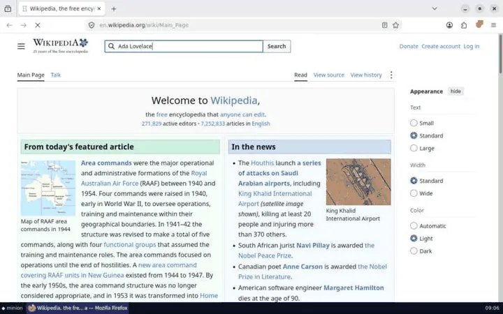
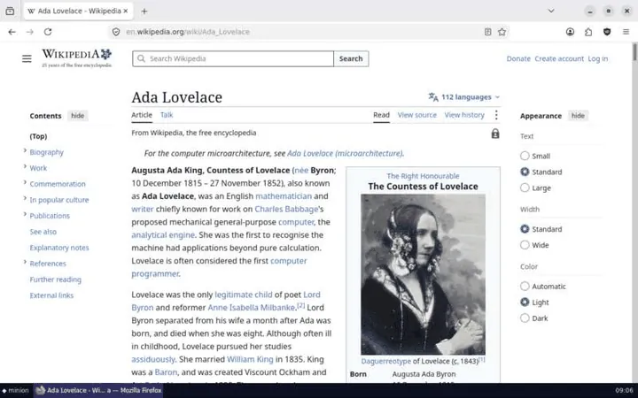
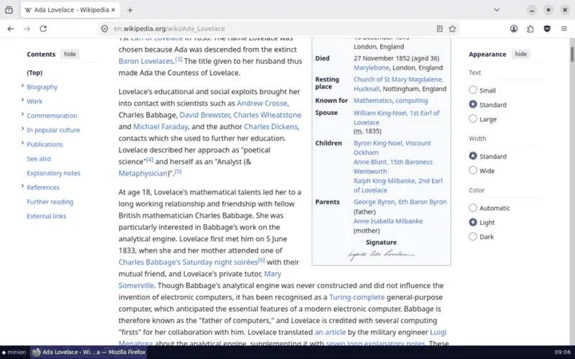
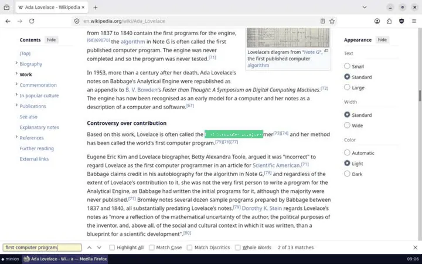
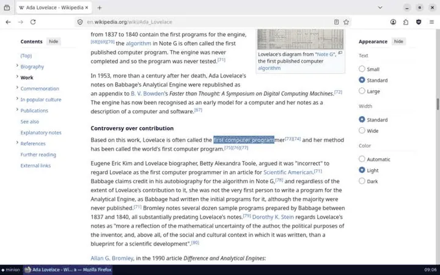
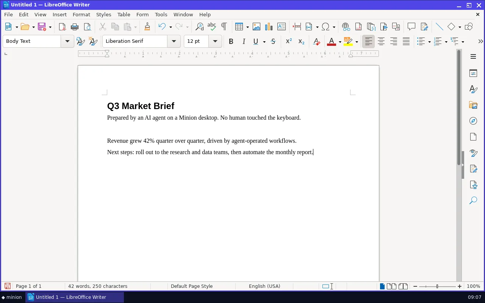
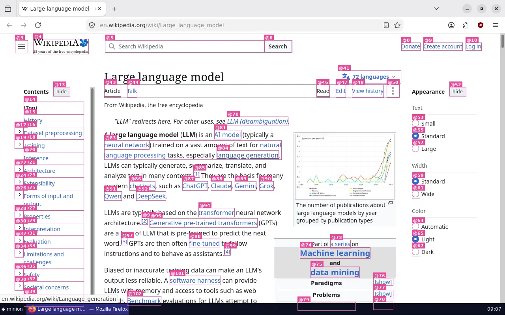
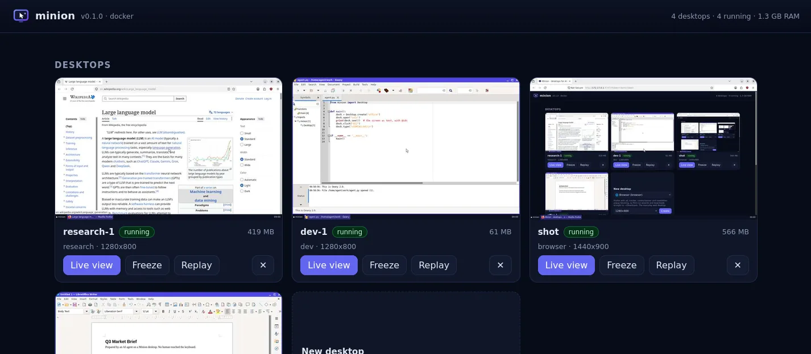
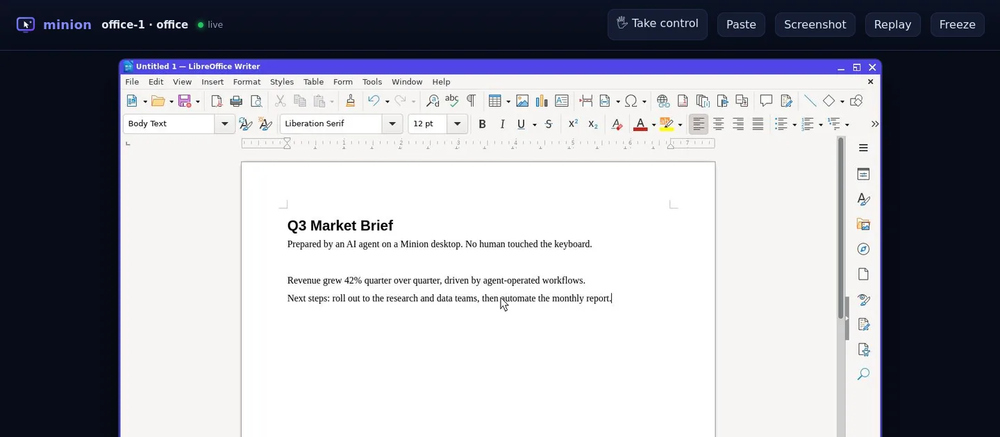

Any program or website
Browsers, LibreOffice, IDEs, terminals, file dialogs and installers, plus Windows programs through Wine. Anything missing is one command away.
minion-install gimp- apt
- .deb
- .AppImage
- pip:
- npm:
Featherweight Linux desktops for any agent, over MCP, function calling, HTTP, a CLI, Python or TypeScript. Agents read the screen as text with stable @ids, act in batches or in code, and use any program or website.





research desktop, step by step, as Minion's built-in flight recorder saw it.@1Install
One command installs Minion and runs minion setup, which checks Docker, prepares a desktop and connects your AI apps. Or add Minion to your app directly.
Install the minion command. No admin rights needed, and it brings uv and Python with it.
curl -fsSL https://raw.githubusercontent.com/apophisss/minion/main/install.sh | shIt finishes with minion setup, which checks Docker, prepares a desktop and connects your AI apps. Run it again any time.
minion setupConnect another app any time with minion connect: Claude Desktop, Claude Code, Cursor, VS Code, Windsurf/Devin, Gemini CLI, Codex, LM Studio and more. Read the install guide
Install the minion command from PowerShell. No admin rights needed, and it brings uv and Python with it.
irm https://raw.githubusercontent.com/apophisss/minion/main/install.ps1 | iexIt finishes with minion setup, which checks Docker, prepares a desktop and connects your AI apps. Run it again any time.
minion setupConnect another app any time with minion connect: Claude Desktop, Claude Code, Cursor, VS Code, Windsurf/Devin, Gemini CLI, Codex, LM Studio and more. Read the install guide
Add the MCP server
claude mcp add minion -- uvx minion-desktop mcpOr install the plugin: the same tools, plus a skill that teaches efficient use.
claude plugin marketplace add apophisss/minion && claude plugin install minion@minionAdd --scope user to use it in every project. For the smallest context, add --compact: one computer tool, about 450 tokens of definitions instead of 3,300. Agents & MCP guide
Or add this to ~/.cursor/mcp.json, or .cursor/mcp.json in a project:
{
"mcpServers": {
"minion": {
"command": "uvx",
"args": ["minion-desktop", "mcp"]
}
}
}Or run minion connect after installing. Agents & MCP guide
Or add this to .vscode/mcp.json:
{
"servers": {
"minion": {
"type": "stdio",
"command": "uvx",
"args": ["minion-desktop", "mcp"]
}
}
}Or run minion connect after installing. Agents & MCP guide
minion.mcpb to install it. It carries Minion itself, so you need no Python, uv or minion command.Or add this to claude_desktop_config.json:
{
"mcpServers": {
"minion": {
"command": "uvx",
"args": ["minion-desktop", "mcp"]
}
}
}Or run minion connect after installing. Integrations
Web apps can't start programs on your computer. minion share starts Minion's server with a fresh token, opens a tunnel to it and prints an HTTPS MCP URL.
Share Minion from your machine
minion sharePaste the URL into the app's connector settings. Ctrl+C stops sharing.
The URL contains the token, so treat it like a password. Read the remote access guide
Install the package. It is pure standard library, so nothing else comes with it.
pip install minion-desktopDrive a desktop from code
from minion import Desktop
desk = Desktop.create("office")
desk.open("writer")
print(desk.see()) # the screen as text, with @ids
desk.type("Hello!\n")
desk.screenshot("hello.png")
desk.remove()@2How agents see
see turns any window into a compact list of controls with stable @ids, taken from the accessibility tree with OCR as a fallback. Spreadsheets come out as A1: value. The text is exact, and every id is clickable.

see~920 tokensScreen 1280x800 · 1 window [1] "Untitled 1 — LibreOffice Writer" — libreoffice-writer (focused) at 0,0 1280x770 UI of "Untitled 1 — LibreOffice Writer" (click/fill with @id; (x,y) is the element center):@1 menu "File" (22,38)@2 menu "Edit" (62,38)…@12 document text "Untitled 1 - LibreOffice Document" [editable] (603,424) @13 heading "Q3 Market Brief" (603,247) @14 paragraph "Prepared by an AI agent on a Minion desktop. No human touched the keyboard." (603,282)
see(changes=true)~80 tokens✓ typed 30 chars→ screen changed <1% (region 404,226 236x20)Changes since your last look 1.0s ago (81 elements unchanged; their @ids still work): + @84 paragraph "Quarterly numbers look strong." [focused] (603,234) ~ @80 label "4 words, 30 characters" (281,730)
@id across looks, so the agent doesn't have to re-read the screen to act.
screenshot(marks=true) draws the ids.@3Efficiency, measured
Screenshots are the most expensive thing an agent can look at, and the model still has to guess coordinates. Minion sends text first, diffs instead of re-reads, and pixels only when they matter.
Lower is better. Every bar uses the same scale.
| What the model receives | Tokens |
|---|---|
| One look at the screen | |
| Screenshot, 1280×800the baseline | ~1,365 |
see of a LibreOffice windowexact text plus clickable ids | ~920 |
screenshot(detail="low")half size | ~341 |
act(observe="crop")only the changed region | ~200 |
see(changes=true)after typing a sentence: the diff only | ~80 |
| Tool definitions, sent with every request | |
| 9 tools | ~3,300 |
Compact modeone computer tool with CLI syntax | ~450 |
Code mode needs no model round trip per step.
| Approach | Tool calls |
|---|---|
act, one call per row | 5 calls |
script, one loop | 1 call |
0model calls
Export a finished session with desktop(action="macro"): a Python script that replays it with no model at all.
Measured on a 2-vCPU VM. Reproduce the numbers with python scripts/bench.py. A terminal costs about 50–90 tokens with see. Whole tasks: five real ones cost 4,356 tokens with Minion and 50,505 with screenshots (the benchmark).
@4Featherweight
One small container per desktop: Xvfb, a two-process window manager and taskbar, and a small agent. No VNC and no desktop environment.
create count=NEvery profile extends another, so ten desktops share one copy of the base image on disk and in the page cache.
A desktop nobody uses or watches is paused with the cgroup freezer. An optional idle stop frees its RAM and keeps its files.
The accessibility library loads on the first look, and the live view streams frames only while someone watches.
Animations, smooth scrolling and caret blinking are off. That saves CPU and makes “the screen settled” exact.
Measured on a 2-vCPU VM with python scripts/bench.py.
@5Features
Every desktop is a real Linux computer, tuned to skip first-run wizards, pop-ups and cookie banners, with everything an agent needs around it.
Browsers, LibreOffice, IDEs, terminals, file dialogs and installers, plus Windows programs through Wine. Anything missing is one command away.
minion-install gimpscript runs Python inside the desktop with click, write, key, see and cells. A 50-step GUI loop is one call, and only what the code prints comes back.
for item, price in [("Coffee", 3.5), ("Bagel", 2.25), ("Juice", 4)]:
write(f"{item}\t{price}\n") # Tab moves right, Return goes down
write("Total\t=SUM(B1:B3)\n")
print(cells()["B4"]) # only this comes back: 9.75create count=8 starts a desktop per worker, fork clones one before a risky step, and sessions keep agents apart. Log in once, snapshot, then fork the logged-in desktop for each task.

Watch any desktop live in your browser and click Take control to use your own mouse and keyboard. An agent can ask you to “Please sign in”, wait until you press Done, then carry on.

Every action is recorded. Export an HTML timeline or a GIF, or turn the session into a Python script that replays it with no model at all.
minion replay -o run.htmlA ready environment for Claude, OpenAI and Gemini computer-use models, with screenshot scaling and coordinate mapping handled for you.
Computer use guidedocker exec--offline, --memory and --cpus when you need limits@6Profiles
Profiles pre-install and tune the common jobs. Each one extends another, so images share layers. Start one with minion up office.
Firefox with uBlock Origin against ads, trackers, cookie banners and newsletter pop-ups. Downloads go straight to ~/Downloads.
LibreOffice Writer, Calc and Impress, a text editor, a file manager and Firefox. Saves Microsoft formats by default.
git, Python, Node.js, build tools, the Geany IDE, a real terminal that see can read, Firefox and Chromium.
Firefox with pdftotext, pandoc, a notes editor, and Python with requests and BeautifulSoup.
Everything in office, plus pandas, NumPy, SciPy, matplotlib, seaborn, openpyxl and SQLite.
Wine 10 for 64- and 32-bit Windows .exe and .msi programs, plus Firefox to download them. Needs an x86‑64 host.
An X server, a window manager, a terminal and the agent. The foundation every other profile builds on.
A short TOML file in ~/.config/minion/profiles/, built the first time you use it.
extends = "browser"
packages = ["gimp"]Missing an app? Add it at runtime with minion-install, or write your own profile. All about profiles
@7Integrations
One toolset, defined once and served everywhere. Errors come back as readable results, so an agent loop never crashes on a bad click.
Apps, IDEs and agent frameworks
uvx minion-desktop mcpChat apps without a terminal
minion shareAny model API, local models too
Toolkit().definitions("openai")Any language, no-code tools
minion serveAgents with a shell
minion skill --installYour own code and agent loops
from minion import DesktopModels with their own computer tool
MinionComputer(desk)Yes, with Docker Desktop (or OrbStack, Colima or Podman). Desktops are Linux containers and the minion command is pure Python. Images are published for amd64 and arm64, so Apple Silicon runs them natively. The exception is the windows profile, which is amd64 only because Wine runs x86 programs only on x86‑64.
On Linux, no: MINION_BACKEND=local runs desktops as native Xvfb sessions with the apps installed on the host. They start faster but are not isolated from your user account. On macOS and Windows, desktops run in Docker or Podman.
Minion is built for agents rather than people. It gives them a text view of the screen with clickable ids, actions that wait for the UI to settle and report what changed, desktops tuned to avoid pop-ups, snapshots and forks, idle freezing, and MCP, SDK and HTTP interfaces. There is no VNC server and no desktop environment, so each desktop is ready in about 1.5 s and stays small.
Those drive a browser through the DOM. Minion drives a whole computer: browsers, office apps, terminals, IDEs, file dialogs, downloads, and anything you apt-get install. The two combine well: run your Playwright script inside a dev desktop and watch the same browser in the live view.
Any model with tool use. see and act are text, so text-only models work too, and vision models can also take screenshots. Small and local models do best with the compact computer tool. Models trained for computer use (Claude, OpenAI, Gemini) can drive desktops natively.
As many as memory allows. An idle desktop uses 54–105 MB, and apps add their usual footprint: Firefox and LibreOffice need a few hundred MB each while open. Frozen desktops use no CPU. Cap each one with --memory and --cpus, and start several at once with minion up -c 8.
It is safer than letting it use your computer. Each desktop is an isolated, unprivileged container. Treat what's on screen as untrusted input, keep secrets out, hand off to a human for sign-ins, and use --offline for untrusted files. Read the security model.
Free and open source under the MIT license. Install it in a minute, connect any agent and watch it work.